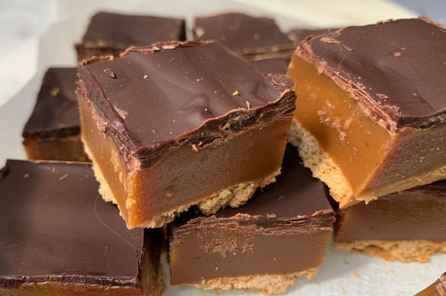

Caramel Slice

Description
Caramel slice is terrific. I chose this recipe because the it had the thickest layer of caramel in the google images search
Ingredients
- 250g malt biscuits
- 390g condensed milk
- 3/4 cup brown sugar firmly packed
- 90g butter
- 2 tbs golden syrup
- 200g chocolate melts
Steps
- Lightly grease a 27 cm slice container with cooking spray. Line bottom with approximately 15 whole biscuits. Crush the remaining biscuits.
- In a large saucepan place the left over crushed biscuits, condensed milk, butter, golden syrup and brown sugar.
- Mix together over medium heat, stirring until mixture begins to boil.
- Reduce heat to low, stirring all the time to unsure mixture doesn't stick to bottom of pan.
- After about 8-10 minutes the mixture will turn a rich brown colour and will begin to separate from the side of the saucepan.
- Pour caramel over the biscuit base.
- Melt chocolate and spread over caramel.
- Refrigerate to set.